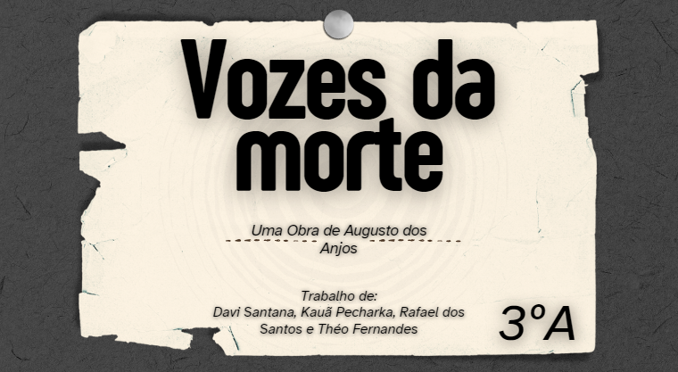

Essa é uma atividade em que pesquisamos um pouco sobre o pré-modernismo, em específico Augusto dos Anjos.
Foi uma atividade simples e divertida

Essa é uma atividade em que fizemos um cartaz sobre Simple-Past.
Fazer a postagem no cartaz, foi uma ideia muito boa.